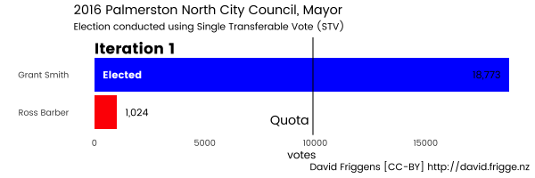
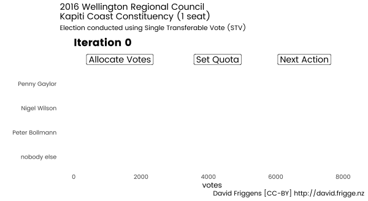
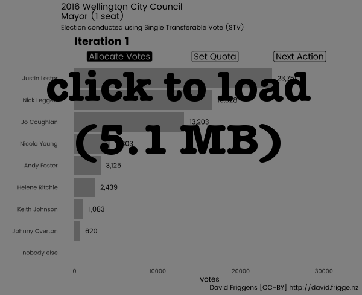
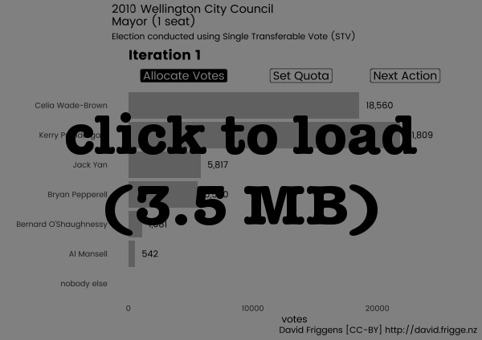
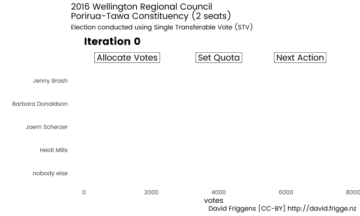

Simple To Vote
8 November 2016
Recently we had local body elections in New Zealand. (You may have heard.) Single Transferable Vote (STV) was used for 7 of the 67 territorial authorities (city and district councils), for 1 of the 11 regional councils, and for 19 of the 20 district health boards1. STV is Simple To Vote, but it can also be Strenuous To Vet — understanding how the votes are counted and the results are calculated is much less intuitive than First Past the Post (FPP).
So here are some animations to hopefully make the process in New Zealand a little easier to understand.
Voting
Voting is pretty straightforward. Instead of picking the single candidate you prefer (or n candidates if there are n seats), you rank all of the candidates in your order of preference. In theory this is pretty simple, but it can be quite an exercise if there are a lot of candidates and you don’t know much about them (a common complaint about the district health boards).
One nice thing is that you don’t really need to think “strategically”. The best strategy really is to rank Person A ahead of Person B if you would prefer them to be elected, and vice versa. In comparison, with FPP (and MMP party selection) you have to consider “wasted” votes, the threat of “splitting” the vote etc. Graham Edgeler has a good discussion of some of the facts.2
In New Zealand, unlike some other jurisdictions, we are not required to rank all candidates. A ballot only needs to have a single candidate ranked 1 to be valid. Some people just do this (at a guess, people who are used to FPP and haven’t cottoned on to STV yet); some only vote for the number of seats available. Others only vote for those they like — though there is still benefit to ranking people you dislike higher than people you despise. Another phenomenon is people ranking the tail of candidates in the order they appear on the paper — some jurisdictions randomise the ballot listing to avoid advantaging Aaron Aardvark over Ziggy Zebra.3
An important point is that you only have one vote at a time — initially your first preference. If your current vote doesn’t count anymore (we’ll get to that) then it transfers to your next preference.
One advantage of this is when candidates withdraw. There were several cases in 2016 of people running for both mayor and council ward, or council ward and community board — if they win the former then they are automatically withdrawn from the latter. In areas using FPP, their votes in the latter race are wasted.4 In areas using STV, the election is no different to if they had not been on the ballot paper.5
Counting
What happens after the initial first preferences are tallied is an interesting question with many answers. STV is actually a family of voting systems, and there are a variety of methods for determining quotas, excluding candidates and transferring votes. A Wikipedia article provides a reasonable summary. The systems used in Scotland, Ireland, Australia and New Zealand (and elsewhere) all differ slightly.
In New Zealand we use a system devised by Meek in 1969 and enshrined in the Local Electoral Act 2001.
Single Seat
For a single seat election, STV is also known as Instant-Runoff Voting (IRV) and Preferential Voting. Simply, a candidate needs to get 50% of the votes to win — if no candidate has enough votes then the lowest polling candidates are eliminated, transferring their votes to the next preferences. Candidates are eliminated until somebody reaches the 50% quota / threshold.
Example: Palmerston North City Council, Mayor 2016
The 2016 mayoralty race in Palmerston North is a simple example of an election being determined on first preferences, giving exactly the same result as FPP. Incumbant mayor Grant Smith received 18,773 votes (94.8%) and was elected on the first iteration, having exceeded the 50% quota of 9,899 votes. Convicted child assaulter Ross Barber received only 1,024 votes (5.2%).

Example: Wellington Regional Council, Kapiti Coast 2016
In 2016, the Kapiti Coast constituency of the Wellington Regional Council had three candidates vying for one seat. 16,455 valid ballots were returned, so the initial quota to be elected was 16455 / 2 = 8227.5.
First preferences were distributed among Penny Gaylor (6,736 / 40.9%), Nigel Wilson (6,704 / 40.7%) and Peter Bollmann (3,015 / 18.3%). Since nobody reached the quota Bollmann, the lowest candidate, was excluded and his votes transferred to their next preferences.
Of those that preferred Bollmann, 1,010 next preferred Gaylor and 687 preferred Wilson. Additionally, 1,318 didn’t rank anyone else at all so their votes are set aside. Now the quota is half of the remaining votes, i.e. (16455 - 1318) / 2 = 7568.5. Gaylor now has 7,746 votes so is elected. Wilson is excluded as the seat has been filled.
Here is the same information in an animated chart. You’ll see that I’ve split each iteration into three steps to make it a little clearer — assigning the votes, calculating the quota, and making a decision on what to do next.

Example: Wellington City Council, Mayor 2016
The 2016 election for Wellington Mayor featured eight hopeful candidates. This was a longer but still simple election. The order of the candidates never changes from first preference, with winner Justin Lester rising from 36.5% of first preferences to 56.4% going head-to-head against runner up Nick Leggett.
Interestingly, in the 7th and final iteration 8,434 voters (13.0%) ranked neither of the top two candidates (and up to 66.0% of those had voted only for the third place getter Jo Coughlan).

Example: Wellington City Council, Mayor 2010
The same election six years previous provides an interesting example of the difference that STV can make.
In the first iteration, incumbant two-term mayor Kerry Prendergast led challenger Celia Wade-Brown 21,809 votes (40.9%) to 18,560 votes (34.8%). In the fifth iteration, Wade-Brown finally pipped Prendergast to win 24,881 votes (50.2%) to 24,705 (49.8%).
Prendergast, who came to power under FPP6 and won a second term under STV, claimed this result was “undemocratic”. I disagree. I read the first preference votes not that “more voters prefer Prendergast to any other candidate”, but that “3/5th of voters would rather have someone other than Prendergast”. Running the STV iterations allows us to discover that more voters preferred Wade-Brown to Prendergast, so her election is the most democratic outcome (given the low voter turnout).

Multiple Seats
STV elections for multiple seats work similarly to a single seat in that first preference votes are used initially, and the lowest polling candidate is excluded and their votes are transferred to the next preference (if any). The quota that has to be reached in order to be elected is the number of votes divided by one plus the number of seats. So if there are two seats you need one third of the votes, for three seats you need one quarter, and so on.
The main difference is what to do with the votes of candidates who are elected when there are still unfilled seats. In the Meek system, the elected candidate keeps just enough votes to stay over the threshold, and their “surplus” votes are transferred to the subsequent preferences. Importantly (and perhaps confusingly), the surplus votes are transferred proportionately based on the subsequent preferences of all votes for the candidate, so there are likely to be fractional votes from this point.
Example: Wellington Regional Council, Porirua-Tawa 2016
Moving south from the Kapiti Coast, the Porirua-Tawa constituency had four candidates vying for two seats on the Wellington Regional Council in 2016. On first preferences, Jenny Brash has 7,705 (45%) of the 17,003 votes, easily surpassing the quota of 17003 / 3 = 5667.7. Trailing behind are Barbara Donaldson with 4,649 votes (27.3%), Joern Scherzer with 2,709 votes (15.9%), and Heidi Mills with 1,940 votes (11.4%).
Now Brash has 2,037.3 surplus votes she “doesn’t need”, as they are above the quota, and which can be transferred to the other candidates.
Of the 7,705 people who preferred Brash, 3,728 people (48.4%) next preferred Donaldson, 1,013 people (13.1%) preferred Scherzer, 1,129 (14.7%) preferred Mills, and 1,835 people (23.8%) had ranked nobody else.
| First Pref | Second Pref | Third Pref | Voters |
|---|---|---|---|
| Brash | Donaldson | ? | 3,728 |
| Brash | Scherzer | ? | 1,013 |
| Brash | Mills | ? | 1,129 |
| Brash | — | — | 1,835 |
| Donaldson | ? | ? | 4,649 |
| Scherzer | ? | ? | 2,709 |
| Mills | ? | ? | 1,940 |
Thus, in the second iteration, Donaldson now has 5,634.7 votes — her original 4,649 first preference votes and 48.4% (985.7) of Brash’s 2,037.3 surplus votes. Since 485.2 votes (23.8% of 2,037.3) have been removed from Brash and not transferred to anyone else, the quota now drops to (17003 - 485.2) / 3 = 5505.9. Donaldson’s votes exceed the quota, so she is elected.
Here is an animation of the calculations.

Note that if there had been a third seat in contention, the next action would not have been to exclude the lowest polling candidate but again to transfer surplus votes. Donaldson has 128.8 surplus votes, but Brash also has 161.8 surplus votes, as the quota has reduced since the original surplus was calculated. Brash would transfer a few more votes to Donaldson, but it is likely that Donaldson will also transfer some votes to Brash, as there may have been voters that ranked Donaldson 1st and Brash 2nd. In larger elections these mutual transfers can take several iterations to reach an equilibrium.
Example: Kapiti Coast District Council, Waikanae Community Board 2016
The 2016 Waikanae Community Board was the result of a strongly contested race between nine candidates for four seats, with a count lasting 11 iterations.
Incumbant and local pharmacist James Westbury is elected in the first iteration, with 1,592 votes (29.9%) easily surpassing the quota of 1064.6 votes.
In the following five iterations, Westbury’s surplus is transferred, and the bottom four candidates are excluded.
In the 7th iteration, Jocelyn Prvanov and Tonchi Begovich both exceed the quota and are elected.
Over the following three iterations the surplus of the three winners is transferred. There is a lot of mutual transfer, perhaps not surprising as they campaigned together.
Finally, at iteration 11, the final seat is decided as Jeremy Seamark narrowly exceeds the quota. Incumbant Eric Gregory is excluded.

Iterations
I found it interesting to see the variation in length of the counting process for the elections. Some were over in a couple of iterations, others in a couple of dozen. The clear winner was the Dunedin City Council’s At Large election, which took 79 iterations to be decided.
There are no doubt a range of factors that can increase or decrease the number of iterations, but the strongest single variable looks, unsurprisingly, to be the number of candidates standing.
Post Script
I’ve found this an interesting process, both for the insights and the technical experimentation.
Elections and Officials
I’ve always been in favour of using STV for local body elections (but prefer MMP for parliament) and thought I had a good idea of how it works. I’ve discovered though that there was a reasonable amount I was unclear on. Getting closer to grokking how the multi-seat counting works and what the fractional votes mean has been enlightening. I’m still a little uneasy about the fractional votes, and am interested to dig a little deeper, especially to look at the differences between the different STV methods.
Also interesting has been an extension of experiencing, as mentioned in the last post, the variety in different councils’ and DHBs’ approaches to making information available. Six of the eight councils, and one of the nineteen DHBs made the iteration report available on their websites. Only one supplied the original XML used by the voting software; the others used PDF, RTF or XLSX. So I put out several OIA/LGOIMA requests for the rest, which similarly elicited a range of responses. One quickly put it up on their website the next day, six have yet to respond, two weeks later. Some passed it through to the 3rd party election company who supplied the XML, others just sent a PDF or Word DOC (not DOCX) and said “that’s all we have!” Finally, two helpfully printed and scanned the datatable (one with a “RELEASED UNDER THE OIA” watermark) to make text extraction impossible. Thankfully they both eventually supplied something more usable.
Data and Graphs
More mundanely, this post has been in gestation for 2-3 weeks. Partly because I’ve been amassing quite a bit of data from the various elections and trying to make sense of them (including retyping some from unhelpful PDFs). I want to have a broader look across it all, and I think it’s grown a bit too big for the blog, so I plan to start a separate repository for it all.
Also, I attempted to create these graphs in three (3!) different formats — ggplot, Plot.ly and Highcharts. First, I spent a reasonable amount of time figuring out how to make the animated gifs I’ve included in the post, created with gganimate and tweenr (and I have to give a huge thank you to Len Kiefer’s excellent posts for helping with this.7). I really like how these have turned out — they’re pretty close to what I had in mind from the outset. My main complaints are that it would be nice to have some (user) controls over the animation, and the files can get quite large (20-40MB for the DHBs).
I gave a talk on this subject at Toastmasters last week, and redid all of these graphs in Plot.ly. This gave me separate graphs for each of the iterations to step through manually, as well as interactive control to zoom in etc. Later, I tried to see if they could be animated, but the best that seems possible is hiding and revealing different series (i.e. not having smooth transformations between them), and controlling the changes by selecting from a drop-down box rather than having a “play” or “next” button.
Just recently I discovered Highcharts’ motion plugin and have tried to recreate the graphs with this too. I’ve successfully created a static plot, but have struggled with the animation. I’ve decided to give up for now and possibly try again later, though it’s not clear to me from the documentation and examples whether I would be able to animate the quota line as well as the bars.
Te be continued…
The DHBs are legally mandated to use STV — one of them didn’t have elections this year.↩
It is theoretically possible to vote “strategically” in STV, but it is NP-complete to determine, so it’s not really something that comes into play. (Bartholdi and Orlin, 1990)↩
I trust that concrete evidence exists for all of the things I’ve mentioned in this paragraph, but I’ve only seen them mentioned in discussion and haven’t felt moved to try and track down references for you. Sorry.↩
For example, in Waipa District Council, Sue Milner was elected to the council in the Cambridge Ward. She also stood for the Cambridge Subdivision (a community board), where she was the third highest polling of seven candidates for four seats. This meant that 16.8% of votes cast — alternatively, one of the four votes cast by 67.1% of voters — were wasted. Given that she received 2,722 votes, and the gap between 4th and 7th was 506 votes, it’s quite conceivable that one or two of the candidates elected could have been different if she had not stood.↩
For example, in Kapiti Coast District Council, K Gurunathan won the mayoralty so all of the votes cast for him as a Districtwide councillor just passed on to the next preference. There were 490 people (2.8%) who voted for him only so their votes could be seen to be wasted. But considering there were 13 people standing for 5 seats I think we can assume that they thought the others were ratbags and wouldn’t have voted for anyone if “Guru” wasn’t on the ballot.
:-)↩I haven’t located any speculation or data on this, but I recall my feeling at the time being that she would not have won under STV.↩
Improving R animated GIFs with tweenr and More tweenr animation examples↩